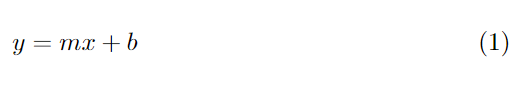
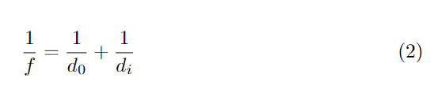
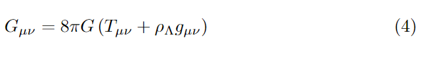
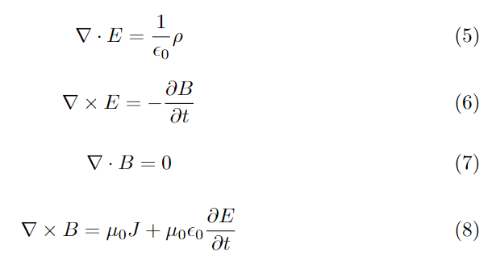

LaTeX is a technology used for document preparation
that helps a writer separate their content from
their typesetting.
It is useful for creating things like articles and books
because it can do things like automatically generate
a table of contents.
The contents of a .tex file will look
similar to a markup language and can be compiled
into a PDF document with the declared format applied.
Additionally, LaTeX can be used with powerful packages
for the generation of nearly any mathematical expression.
For this reason, LaTeX is widely used in mathematics and
science.
LaTeX is useful for rendering:
- symbols
- equations
- matrices
- tables
- graphs
When creating a LaTeX document you can use any editor
you like. Create a text file and save it with the extension .tex. Then you can choose what type
of layout will be applied to your content by declaring a document class. for instance you can create an article by using the argument
article in the following command like so:
\documentclass{article}
To add content to your document you must declare
a document environment.
You can do this with the \begin command.
Every environment created with \begin
must also be closed with a corresponding \end.
So the basic structure of an article would like:
\documentclass{article}
\begin{document}
article content goes here
\end{document}
LaTeX is a powerful too for creating and rendering equations.
To create an equation you must create an equation
environment similar to how you create a document environment.
You pass the argument equation to the
\begin and \end commands.
This method also automatically applies numbering
to every equation that you make.
You can render the equation of a line with:
\begin{equation}
y=mx+b
\end{equation}
When it is compiled you will get:

There are many commands available to allow you
to create complex equations.
You can create a fraction with the \frac
command.
It takes two arguments.
The first is the numerator
and the second is the denominator.
This can be used to write the thin lens equation
with the following LaTeX:
\begin{equation}
\frac{1}{f}=\frac{1}{d_0}+\frac{1}{d_i}
\end{equation}
It will render as:
Here we have also used an underscore which puts the character that follows in subscript. You can also use a caret to put the character that follows in superscript.
There are also many functions you can
write in LaTeX with various commands.
In the following example, a trigonometric
identity is written with a square root
created with the command \sqrt
and trig functions are created with the commands
\sin and \cos.
\begin{equation}
\sin{x}=\sqrt{1-\cos^2{x}}
\end{equation}
Note the ability to place ^2
between the command and its argument.
The result is:
In order to use commands like
\sin and \cos
you may need to import the package amsmath.
This can be done buy using the command
\usepackage{amsmath} at
the beginning of your document after
you declare the document class.
LaTeX includes commands to print symbols
ranging from the Greek alphabet to
various math operations and symbols.
The greek letter alpha can be rendered
with the command \alpha.
The greek letter omega can be rendered with
\omega and an uppercase omega
can be rendered with \Omega.
A multiplicaion symbol can be made with
\times and a proportionality
symbol can be made with \propto.
Here is an example LaTeX sample and output
that uses various symbols that are easily
accessible with commands. Here is Einstein's
equation of general relativity.
\begin{equation}
G_{\mu\nu}= 8\pi G\left(T_{\mu\nu} +\rho_\Lambda g_{\mu\nu}\right)
\end{equation}

There are a couple other techniques implemented
here.
In order to put more than one character in
superscript or subcript,
you can place all of the charaters in curly
brackets after the caret or underscore.
To create a set of parentheses that scale to
the size of the content within, use
\left( and \right).
We are now ready to write Maxwell's equations
in LaTeX.
We will use the command \nabla
to make the gradient operator,
the commmand \cdot
for the dot product operator,
and the command \partial
for the partial differential.
\begin{equation}
\nabla\cdot E=\frac{1}{\epsilon_0}\rho
\end{equation}
\begin{equation}
\nabla\times E=-\frac{\partial B}{\partial t}
\end{equation}
\begin{equation}
\nabla\cdot B=0
\end{equation}
\begin{equation}
\nabla\times B=\mu_0 J +\mu_0\epsilon_0 \frac{\partial E}{\partial t}
\end{equation}
The result is:
LaTeX-Tutorial by Xiong Ying at latex-tutorial.com
Introduction to Electrodynamics by David J. Griffiths